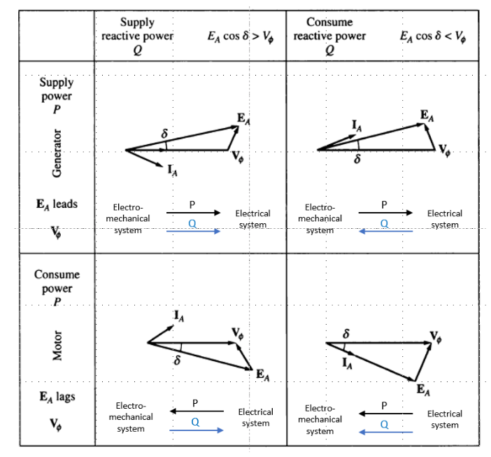
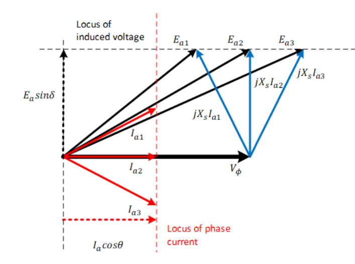
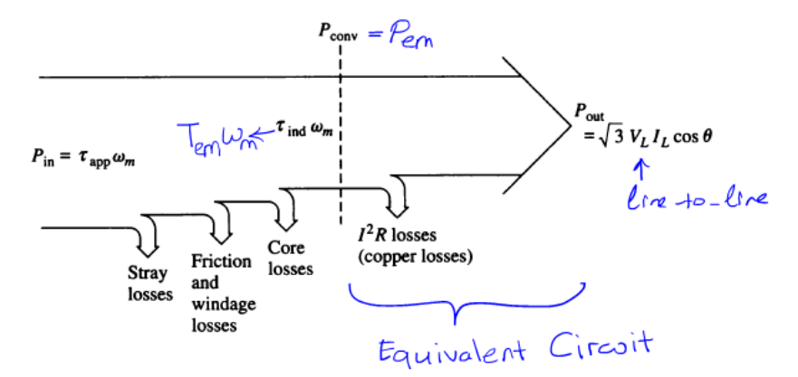

class: center, middle ### EÜAŞ - ODTÜ Elektrik EGEN Generatör Tasarımı ve İmalatı Projesi # Senkron Elektrik Makinaların V-Eğrileri # Gerçek & Reaktif Güç Akışı ## Ozan Keysan [keysan.me](http://keysan.me) Office: C-113 <span class="meta">•</span> Tel: 210 7586 --- # Senkron Makinelerde Aktif Güç ## \\(P = 3 V_t I_a cos (\theta)\\) Watt -- ### ya da yük açısı cinsinden ## \\(P = \dfrac{3 V\_t E\_f sin(\delta)}{X\_s}\\) ### Not: \\(R_a\\)'nın ihmal edildiği durumda --- ## Reaktif Güç -- ## \\(Q = 3 V_t I_a sin (\theta)\\) VAR -- ## \\(Q = \dfrac{3 V\_t (E\_f cos(\delta)-V\_t)}{X\_s} \\) --- # Aktif ve Reaktif Güç Akış Yönü -- ## Aktif güç (P) fazörde önde olan (leading) taraftan geride (lagging) olan tarafa doğru akar -- ## Reaktif güç (Q) fazla uyartılmış taraftan az uyartılmış sisteme (yüksek gerilimden az gerilime) doğru akar -- ## Reaktif akımla (lagging) çalışan generatör şebekeye reaktif güç (Q) gönderir, ## Reaktif akımla çalışan motor reaktif güç (Q) kullanır --- # Aktif ve Reaktif Güç Akış Yönü --- # Aktif ve Reaktif Güç Akış Yönü  --- ## Şebekeye (Sonsuz Bara) Bağlı Senkron Generatör <img src="http://people.ucalgary.ca/~aknigh/electrical_machines/images/synch/inf_bus_vf.gif" alt="Drawing" style="width: 600px;"/> ### Sabit terminal gerilimi ve sabit frekans (50Hz) --- ## Şebekeye (Sonsuz Bara) Bağlı Senkron Generatör # \\(\vec{E\_f} = \vec{V\_t} \pm (R\_a + j X\_s)\vec{I\_a}\\) ## \\(+\\): Generatör Modu ## \\(-\\): Motor Modu ## \\(V\_t\\): Sabit şebeke gerilimi (örn. 13.8 kV) --- ## Şebekeye (Sonsuz Bara) Bağlı Senkron Generatör ### İki ana çalışma modu - ## Sabit İkaz Akımı (sabit Ef), Değişken Yük (Circle Diagram) - ## Sabit Aktif Güç, Değişken İkaz Akımı ### [Animasyon](https://people.ucalgary.ca/~aknigh/electrical_machines/synchronous/sg_p_infinite_bus.html) --- ## Sabit İkaz Akımı (sabit Ef), Değişken Yük ## Geometrik olarak: \\(E_f\\)'in büyüklüğü sabit kalır ## Mekanik yüke bağlı olarak yük açısı (\\(delta\\)) ve giç faktörü (\\(\theta\\)) değişir --- ## Sabit Güç, Değişken İkaz Akımı ## Güç sabit ise \\( I\_a cos (\theta)\\) sabit ## \\(E\_f sin (\delta) = X\_s I\_a cos (\theta)\\) = Sabit ## \\(E_f\\) sadece yatay düzlemde hareket eder --- ## Sabit Güç, Değişken İkaz Akımı --  -- ### Sabit güçte ikaz akımına \\(I\_f\\) göre armatür akımı \\(I\_a\\) nasıl olur? --- # V-Eğrileri <img src="http://cnx.org/resources/6de6fb9681b86029171c18599b512085/graphics17.png" alt="Drawing" style="width: 500px;"/> --- # Faydalı Animasyonlar ### [Infinite Bus Operation Animation](http://people.ucalgary.ca/~aknigh/electrical_machines/synchronous/sg_p_infinite_bus.html) ### [V-curves of a synchronous motor](http://www.ece.umn.edu/users/riaz/anim/synchronous_motor_Vcurves.html) ### [Synchronous generator capability curves](http://www.ece.umn.edu/users/riaz/anim/sm_V.html) ### [Other Animations](http://www.ece.umn.edu/users/riaz/animations/listanimations.html) --- # Senkron Kondansatör -- ## Yüksük durumda çalışan bir senkron motor <img src="http://electrical4u.com/electrical/wp-content/uploads/2013/05/V-curves-for-a-synchronous-motor-with-variable-excitation-20-02-15.gif" alt="Drawing" style="width: 300px;"/> ### Şebekeye gereken reaktif güç desteği sağlamak (ya da fazlasını almak) için kullanılır ### İkaz akımı \\(I_f\\) değiştirilerek kapasitör ya da reaktör olarak çalışabilir! --- # Senkron Kondansatör <img src="https://teletype.in/files/0d/0dcf01b2-14e7-46d9-8be2-2d285e2e93ac.jpeg" alt="Drawing" style="width: 600px;"/> --- # Senkron Kondansatör <img src="http://www.weg.net/var/ezflow_site/storage/images/media-center/noticias/produtos-e-solucoes/maiores-compensadores-sincronos-do-brasil-produzidos-pela-weg/6039478-16-eng/WEG-Manufactures-Mega-Synchronous-Condensers_noticia_detalhe_w.jpg" alt="Drawing" style="width: 350px;"/> ### 100 MVAr, 300 ton, 2014 [WEG](http://www.weg.net/us/Media-Center/News/Products-Solutions/WEG-Manufactures-Mega-Synchronous-Condensers) for the Brasil Grid. [Manufacturing Video](https://www.youtube.com/watch?v=8g6CssH5iWo) #### Okuma listesi: [Rise of renewables leads to synchronous condenser revival](https://new.abb.com/motors-generators/synchronous-condensers/rise-of-renewables-leads-to-synchronous-condenser-revival), [An old tool rediscovered to address new grid challenges](http://search.abb.com/library/Download.aspx?DocumentID=9AKK107258&LanguageCode=en&DocumentPartId=&Action=Launch) --- # Senkron Makinelerdeki Kayıplar  --- # Senkron Makinelerin Çalışma Limitleri -- - ## Stator Sargılarındaki Isınma: \\(\propto I_a^2\\) -- - ## Rotor Sargılarındaki Isınma: ## Sınırlı \\( I_f\\) = Sınırlı \\( E_f\\) -- - ## Mekanik Güç Limiti -- - ## Stabilizasyon Limiti \\(\delta < 90 \\) --- # Operating Limits of Synchronous Machines <img src="./images/synch_limits.png" alt="Drawing" style="width: 650px;"/> --- # Senkron Makinelerin Çalışma Limitleri <img src="./images/cummins_stability.png" alt="Drawing" style="width: 600px;"/> ### [Source:Cummins Generators](http://power.cummins.com/sites/default/files/literature/technicalpapers/PT-6001-ImpactofPowerFactorLoads-en.pdf) --- ## Örnek: -- ## 500 MVA, 3-faz, 4-kutup, Y-bağlı senkron generatör 22 kV şebekeye sonsuz baradan başlanmıştır. -- ## Mekanik güç limiti 300 MW'dır -- ### a) 0.8 endüktif güç faktörü için gerekli Ef ve yğk açısını hesaplayınız -- ### b) Hesaplanan değeri güç denklemlerinden doğrulayınız -- ### c) İkaz akımı değiştirilerek güç faktörü (pf) 1 yapıldıysa bu durumdaki Ef ve yük açısını hesaplayınız --- <!-- # Excluded Slides # Synchronous Machine Tests ## Open-Circuit Characteristics (OCC) <img src="http://people.ucalgary.ca/~aknigh/electrical_machines/synchronous/design/images/figs/oc_test.jpg" alt="Drawing" style="width: 300px;"/> ### At open-circuit friction and core losses can also be estimated. # Short-Circuit Characteristics (SCC) ## Armature windings short circuited, a small If is applied <img src="http://circuitglobe.com/wp-content/uploads/2016/01/Synchronous-Impedance-Methos-fig-5-compressor.jpg" alt="Drawing" style="width: 400px;"/> # OCC vs SCC <img src="http://electrical-riddles.com/upload/images/723392592_99.GIF" alt="Drawing" style="width: 616px;"/> # Determination of Xs ## If \\(R_a\\) is small: # \\(X\_s = \dfrac{V\_{(OC)}}{Ia\_{(SC)}}\\) ### For better approximation measure \\(R\_{a(dc)}\\) when the machine is stationary. # Determination of Xs ## \\(X\_s\\) can be calculated both for saturated and unsaturated regions <img src="http://people.ucalgary.ca/~aknigh/electrical_machines/synchronous/design/images/figs/xs_plot.jpg" alt="Drawing" style="width: 454px;"/> --> ## Bu sunumu aşağıdaki linkten indirebilirsiniz: ## [keysan.me/egen](http://keysan.me/egen)